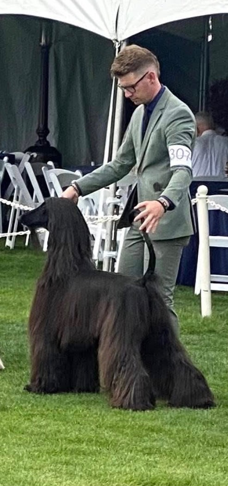
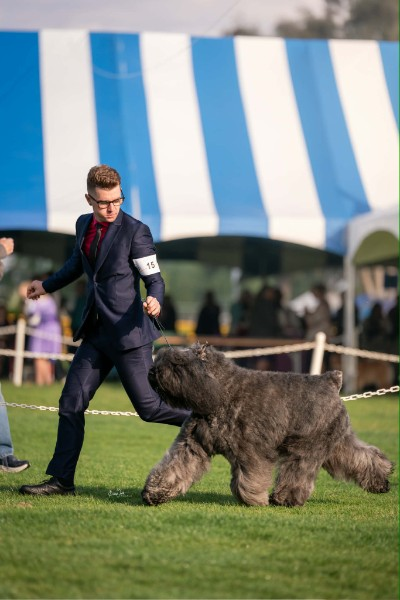

Our new Professional Kennelman, in his own words.

Please join us in welcoming Payden Steele as Santa Fe Hunt's new Professional Kennelman! Payden was born and raised in Southeastern Missouri, where he built a career showing dogs professionally — including a recent trip to Westminster to show a Bouvier des Flandres. He also brings experience in grooming and a lifelong love of horses; in fact, that's how he met his partner Daniel, while both were working at an equine performance venue in Missouri. Payden has a natural way with animals that our hounds (and horses) have already taken to. We sat down with him to learn a bit more — read on to get to know him!

Tell us a bit about your background with canines — how did you get started?
Growing up in the Midwest my family always had Beagles which we used for rabbit hunting. I watched Westminster reruns and thought that dog shows were only the ones I saw on TV. In my early 20’s my partner Daniel took me to my first dog show. I was instantly hooked and knew that I wanted to make dogs my life’s work.
What drew you to want to work with Santa Fe Hunt specifically?
In AKC Conformation shows it showcases the dog’s structure and how they best match the written standard describing how they should look — very much like a beauty pageant. I see the hounds and their potential to breed for conformation shows, but am most excited to see them do the job that they were bred for and keeping the tradition of hunting with hounds moving forward into the future.
What’s something people might not realize about caring for a pack of hounds?
Caring for hounds isn’t just feeding them and cleaning up after them. It’s learning their personalities, balancing the pack, and setting them up for success in doing their jobs. Dogs thrive off of routine, physical exercise and mental stimulation — all things I believe I can help by contributing to the pack.
What are you most looking forward to as you get to know our hounds and members this season?
I am excited — after meeting the hounds and observing them practice in the off season — to see them actually hunt, and spend time with others who are contributing in keeping tradition alive.
Any early impressions of the pack so far?
So far my first impression is that there are several new and upcoming puppies learning the ropes, a few solid veteran hounds who know the routine, with a few pack members who have needed refreshing in their duties but with Steve’s guidance they are catching on.
Outside of hound work, what do you enjoy doing?
Outside of dogs, I love music, art, horses and great food.
Anything fun members should know about you — a favorite breed, a funny hound story, a hidden talent?
After spending almost 10 years showing dogs, I’ve come to love a handful of breeds that are very different in looks and personalities. My first show dog was a standard poodle, so I’ll always have a fondness for poodles. Top 5 breeds would be Affenpinschers, Bulldogs, Dobermans, Poodles and Whippets.
Many people don’t realize that hounds — while domestic dogs — are not like many other breeds. Hounds are resourceful, sensitive, intelligent and resilient. I lived with an Afghan hound for 4 years, observing him taught me so much more about managing dogs. He loved treats, but loved them more when he thought he was stealing them. So we would leave his treat at the edge of the counter every night, letting him think he stole it.
Most people would be surprised to know that I am a licensed cosmetologist, and enjoy playing the piano.
Anything you’d like to say directly to the membership as you get settled in?
Thank you all for the opportunity to be involved with a tradition that’s rich in both culture and history. I look forward to meeting you all, seeing the hounds thrive, and enjoying a successful hunt season.